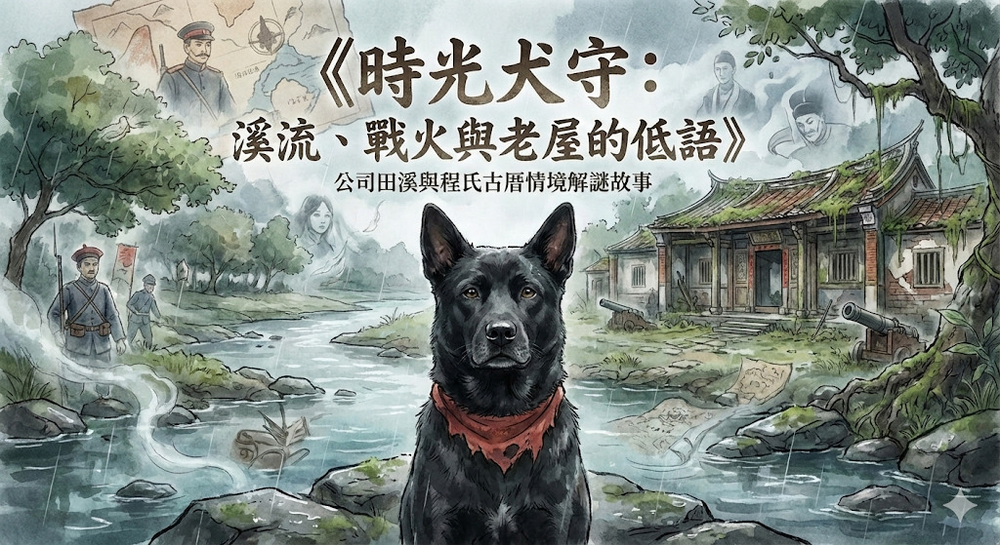

×
📷 旅途相簿
尚未收集到任何照片
×
📖 選擇章節
第一章：林子溪訊號
第二章：沉默的入侵者
第三章：時光堡壘
第四章：時空膠囊
終章：道別
序章
☰
🖼️ 相簿收集
🔖 選擇章節
↺ 重置進度

時光犬守
溪流、戰火與老屋的低語
公司田溪情境解謎故事
🐾 開啟時光之旅
📍 開啟地圖並確認已抵達溪邊
A. 這裡以前有很多現代商業公司
B. 這是公家機關或司法單位的地盤
C. 這是指眾人「公共合作」開墾的意思
🌿 看到雜草與水泥護岸，水流細小
🌊 想像這裡曾經是可以行船的灌溉大河
🐾 跟隨阿給前往下一個地點
📍 我已抵達可過河處
A. 鬆軟的泥土與長滿青苔的大石頭
B. 整齊灰白的水泥牆與混凝土塊
C. 茂密的原始紅樹林
📸 我已拍好！
🌑 黑色、像石頭一樣粗糙的大魚
🌫️ 什麼都沒有，水太混濁
📸 拍好照片，前往下一站
📍 我已抵達程氏古厝
A. 1884 年清法戰爭之後為了紀念勝利蓋的
B. 確切年份「不可考」，只知道大概是清朝光緒初年
C. 日治時期為了農業推廣蓋的
A. 牆壁上有一些外窄內寬的小方孔（銃孔）
B. 牆壁像是穿了一件瓦片做的雨衣（穿瓦衫）
C. 牆角有一個小小的拱門洞（貓洞）
📸 拍照留念
A. 希望水泥能少一點，讓泥土和螃蟹的家回來
B. 希望新市鎮的人們，能繼續說著古厝與河流的老故事
C. 希望人類與自然，能找到一個不互相傷害的共存方式
🔄 重新開始旅程